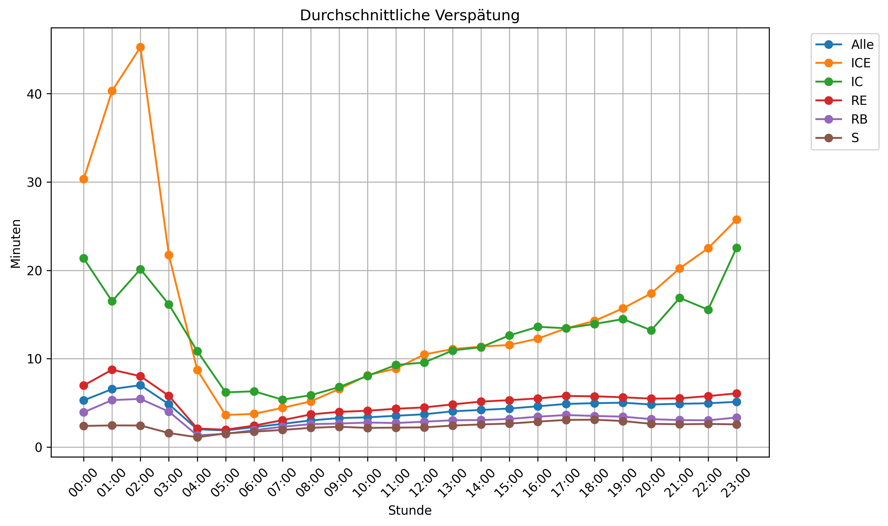
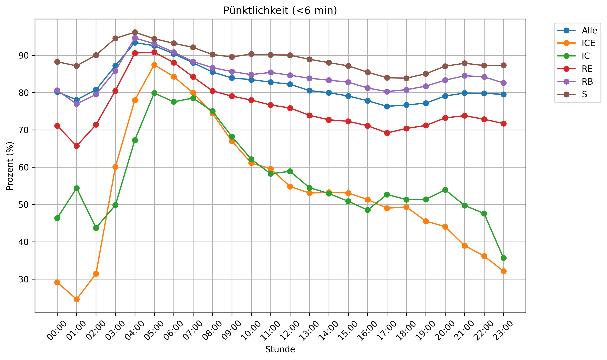
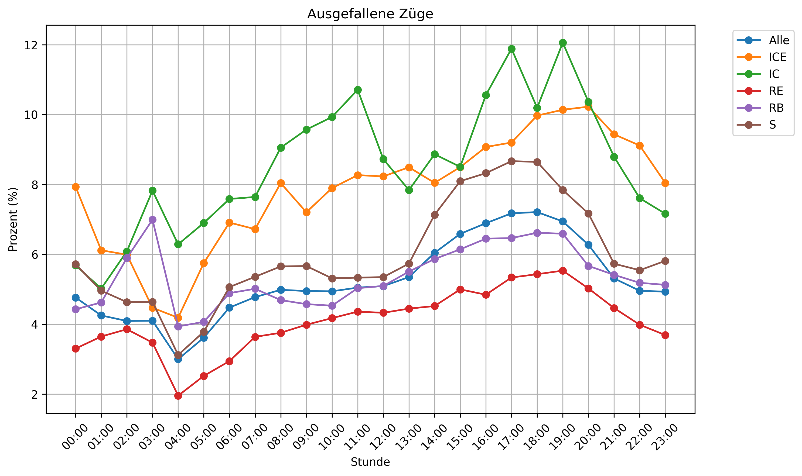

Hier sind die Verspätungen, Pünktlichkeit, Ausfälle und Anzahl der Halte von Zügen in Deutschland nach Uhrzeit, Monat, Wochentag und Tag aufgeschlüsselt.
Zur Berechnung von Uhrzeit, Wochentag und Tag werden die Zugdaten der letzten drei Monate verwendet.
Quelle: Berechnet auf Basis von gesammelten Daten von der Deutschen Bahn vom 2025.06.01 bis 2025.09.01.